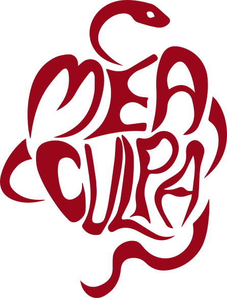
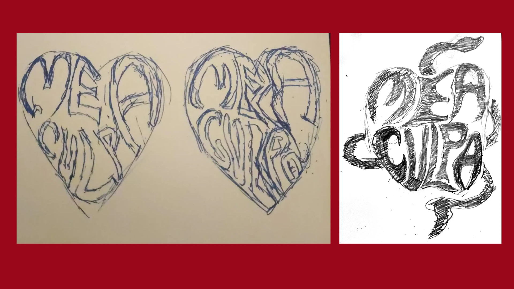
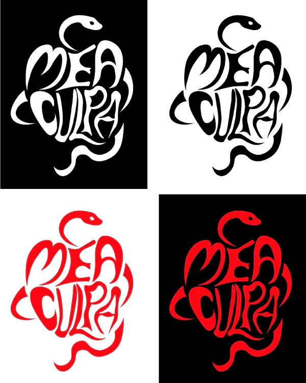
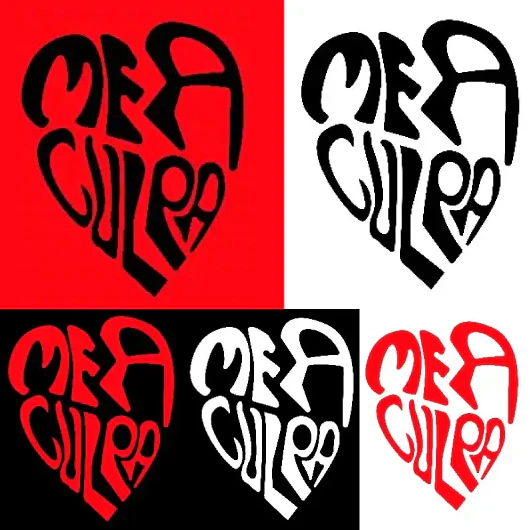
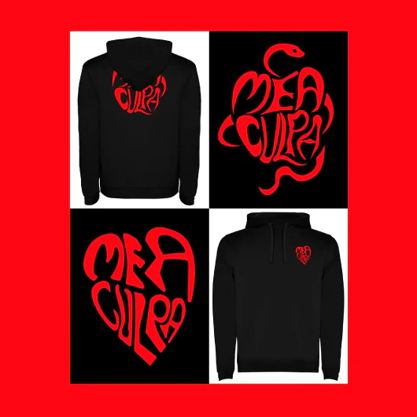
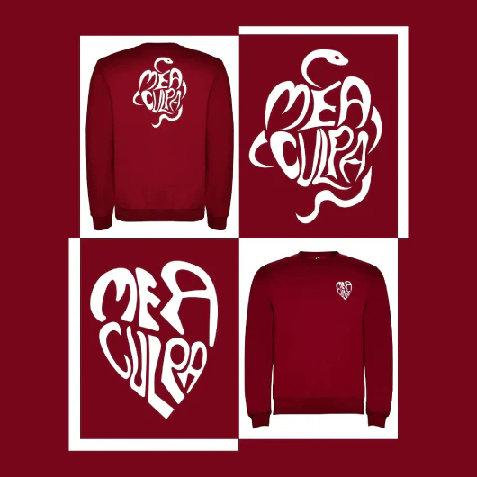
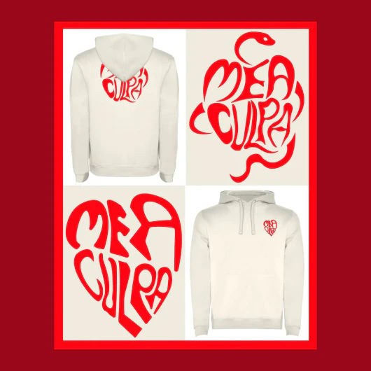
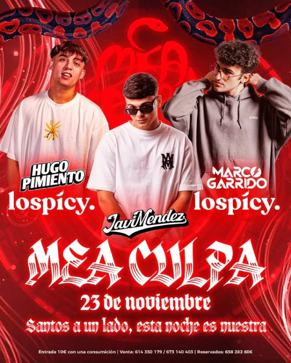
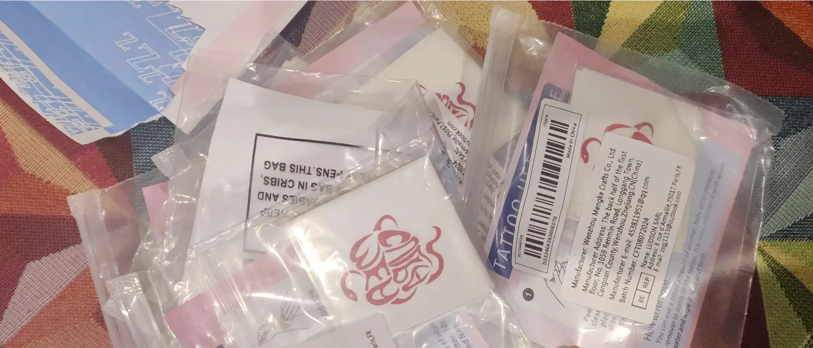

Mea
Culpa
"Identidad Visual para un evento con SÍ al pecado".
Mea Culpa nace para esas noches donde el pecado se sirve en botellas de alcohol, DJ en cabina, una fiesta donde no hay reglas y donde el desenfreno es el protagonista.
Queríamos un logo para el evento, donde transmitiera la persuasión, el pecado carnal y las noches donde lo que pasó, pasó. Aquí comienza mi reto: ¿Cómo plasmar el pecado carnal en un logo para una fiesta urbana?
El punto de partida fue la búsqueda en el origen de la creación: Eva mordió la manzana, sucumbida por la serpiente como símbolo del pecado. De ahí surgió la idea de crear un logo que representara esa manzana, pero con un giro moderno y atrevido, reflejando la esencia de Mea Culpa. A continuación, se muestra los primeros bocetos:

Bocetos Principales — Mano Alzada

Para añadir ese aspecto urbano, en tendencias de moda volvió el estilo "vintage", quería que al realizar el mechardising del logo para tatuajes temporales y sudaderas, no solo fuese un recuerdo, sino una vestimenta para el día a día o para combinarlo con un outfit "del rollo".
Finalmente, se realizó una vectorización del logo a mano alzada, se añadió un rojo granate y alternación positivo y negativo.
"Fruto del pecado original, la noche llama al desenfreno"
Juan Antonio ·
Propietario CopaCabana La Algaba
- Identidad
- Mea Culpa
- Año
- Disciplina
- Branding · Mechardising
- Herramientas
- Illustrator · Mano Alzada
- Entregables
- Guía de marca · Mockups · Sudaderas · Tatuajes Temporales

Aplicación de marca

Aplicación de marca 01

Aplicación de marca 02

Aplicación de marca 03

Las aplicaciones de marca se desarrollaron con la misma coherencia y cuidado que el proceso de conceptualización. Cada pieza forma parte de un sistema visual sólido que garantiza la consistencia en todos los soportes físicos y digitales cuales fuesen llegar a aplicarse.
Desde la cartelería hasta los formatos digitales para redes sociales, cada aplicación mantiene la identidad visual intacta, adaptando el lenguaje gráfico a las necesidades específicas de cada canal.
